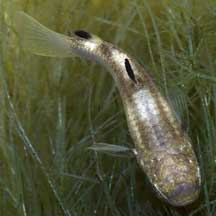
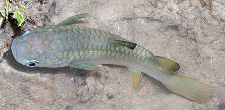
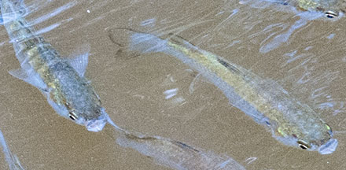
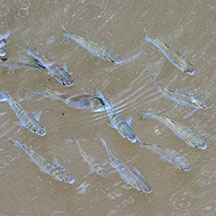
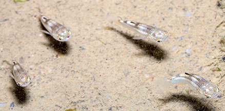

|
|
| fishes text index | photo index |
| Phylum Chordata > Subphylum Vertebrate > fishes |
| Mullets Family Mugilidae updated Sep 2020 Where seen? This tiny plump fish is commonly seen on many of our shores. Often in small groups of 5 or so, in rock pools or pools in sandy areas. They are probably juvenile mullets. Larger adults are often seen in schools at high tide from boardwalks and jetties. Mullets are farmed in cages in the West Johor Strait, so during mass fish deaths, they often wash up in large numbers. What are mullets? Mullets belong to Family Mugilidae. According to FishBase: the family has 17 genera and 72 species. They are found in tropical and temperate seas. Species can look very similar and are hard to tell apart in the field. Some can reach 90cm long. Features: On the intertidal, tiny to small juveniles (1-4cm) can be seen. Body long and cylindrical with a broad flat blunt head and a small mouth. Two dorsal fins, wide apart from one another. Colour generally silvery, some with stripes. |
 Tiny juvenile. Sentosa, Jan 05 |
 Small juvenile. Labrador, Jul 11 |
|
 Sungei Buloh Wetland Reserve, Feb 11 |
 Large ones seen from the boardwalk. Sungei Buloh Wetland Reserve, Feb 11 |
| What do they eat? They feed
by filtering large quantities of bottom detritus, to eat microscopic
algae and other tiny organisms. They may have only tiny teeth or
no teeth at all. Most are found in brackish coastal waters, in some,
the juveniles are found in freshwater. Human uses: They are among the important fishes harvested for food with a wide variety of nets. |
| Mullets on Singapore shores |
On wildsingapore
flickr
|
| Other sightings on Singapore shores |
 Tiny juveniles often seen in schools. Changi, May 17 Photo shared by Marcus Ng on flickr. |
| Family
Mugilidae recorded for Singapore from Wee Y.C. and Peter K. L. Ng. 1994. A First Look at Biodiversity in Singapore. *Lim, Kelvin K. P. & Jeffrey K. Y. Low, 1998. A Guide to the Common Marine Fishes of Singapore. Singapore Science Centre. ** from WORMS +Other additions (Singapore Biodiversity Record, etc)
|
Links
References
|